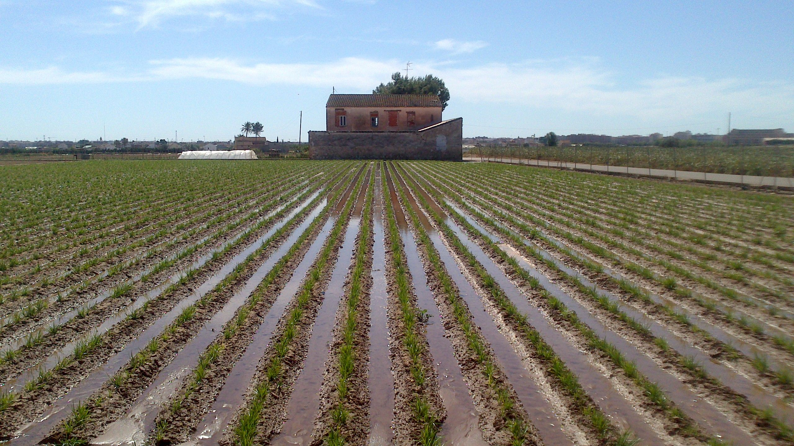

Hortatech utiliza una variedad de soluciones tecnológicas avanzadas para optimizar la gestión del agua y la preservación del patrimonio en la Huerta de Valencia. Estas soluciones están diseñadas para mejorar la eficiencia, la sostenibilidad y la efectividad de nuestras operaciones. A continuación, se presenta una descripción de algunas de las principales soluciones tecnológicas utilizadas en Hortatech:
- Sistemas de telemetría y control en tiempo real: Implementamos sistemas de telemetría y control en tiempo real para monitorear y gestionar de manera eficiente los recursos hídricos. Estos sistemas nos permiten recopilar datos precisos sobre el flujo de agua, los niveles de humedad del suelo y otros parámetros relevantes. Utilizando esta información, podemos ajustar las operaciones de riego y garantizar un uso óptimo del agua.
- Sensores y dispositivos inteligentes: Empleamos una variedad de sensores y dispositivos inteligentes para monitorear y recopilar datos en tiempo real sobre la calidad del agua, la temperatura, la humedad y otros indicadores relevantes. Estos dispositivos nos ayudan a detectar problemas potenciales, identificar tendencias y tomar decisiones informadas para garantizar la calidad del agua y la eficiencia en su uso.
- Plataformas de gestión de datos: Utilizamos plataformas de gestión de datos para almacenar, analizar y visualizar la información recopilada por nuestros sistemas de monitoreo. Estas plataformas nos brindan una visión completa y en tiempo real de los datos, lo que nos permite tomar decisiones basadas en evidencia y optimizar nuestras operaciones.
- Modelos de predicción y análisis avanzado: Aplicamos modelos de predicción y análisis avanzado para prever la demanda de agua, identificar patrones de uso y optimizar la planificación del riego. Estos modelos nos ayudan a optimizar el uso del agua y a garantizar una distribución equitativa y eficiente de los recursos hídricos en la Huerta de Valencia.
- Tecnología de información geográfica (GIS): Utilizamos tecnología de información geográfica para mapear y visualizar la distribución de los recursos hídricos, los sistemas de riego y otros elementos relevantes en la Huerta de Valencia. Esto nos permite tener una comprensión completa de la infraestructura hidráulica y optimizar su funcionamiento.
Estas soluciones tecnológicas avanzadas nos permiten tomar decisiones más informadas, optimizar el uso del agua, mejorar la gestión de recursos y preservar el patrimonio de la Huerta de Valencia. A través de la implementación de estas tecnologías, buscamos lograr una gestión hídrica más eficiente, sostenible y resiliente en beneficio de la comunidad local y del medio ambiente.
.png)